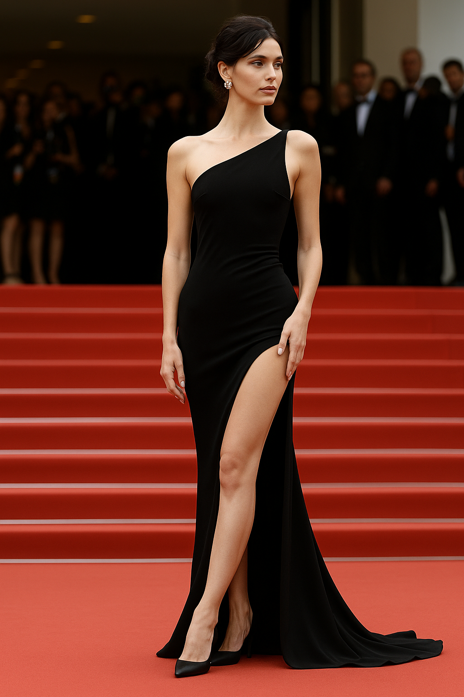

Bella Hadid Breaks the Dress Code at Cannes 2025
May 15, 2025 — Cannes, France.
After a noticeable absence from the runways, Bella Hadid returned to the spotlight with the kind of audacity only she can master. Appearing on the red carpet at the Cannes Film Festival 2025, the model wore a provocative Saint Laurent dress that subtly — and stylishly — defied the festival's newly implemented modesty dress code.
The code, quietly introduced this year, encourages attendees to avoid transparent or overly revealing garments. But Bella's look — a sleek black silhouette with sheer paneling and a daring thigh slit — was both elegant and unapologetically bold.
“She didn’t just show up. She made a statement.” — Style Atlas
The ensemble, paired with her signature minimal makeup and slicked-back hair, ignited immediate discussion online. It wasn’t just fashion; it was protest through tailoring — a move that echoed Bella's longstanding embrace of boundary-pushing style moments.
The press dubbed it “quiet rebellion.” Vogue praised the precision. Twitter exploded. And Cannes took note.
What’s undeniable is that Bella’s return reminded the industry of her cultural weight. Not just as a model, but as a symbol of how fashion continues to clash with — and challenge — institutional norms.
Image not of Bella Hadid. Editorial visualization only.
Published: 2025-05-15